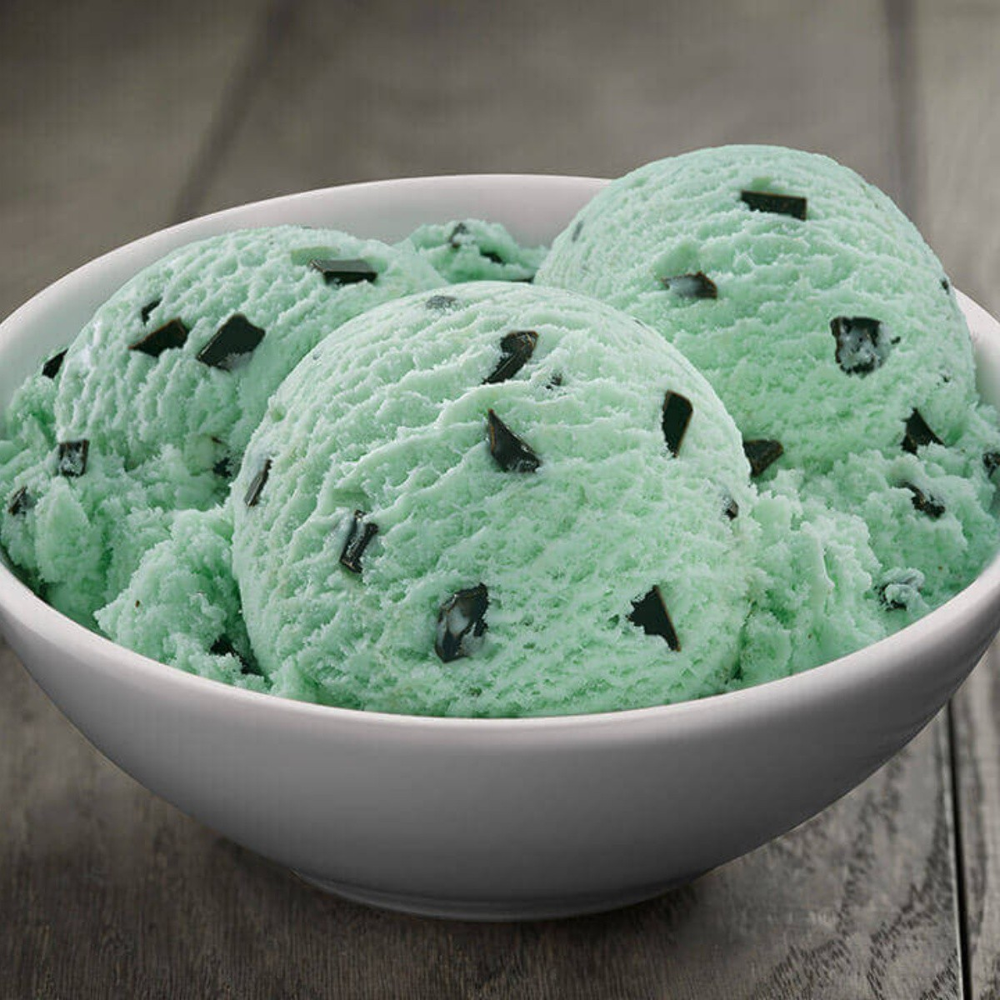
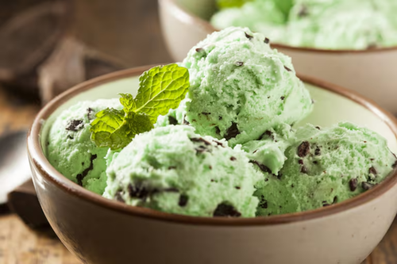
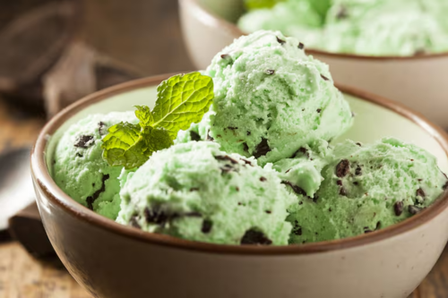
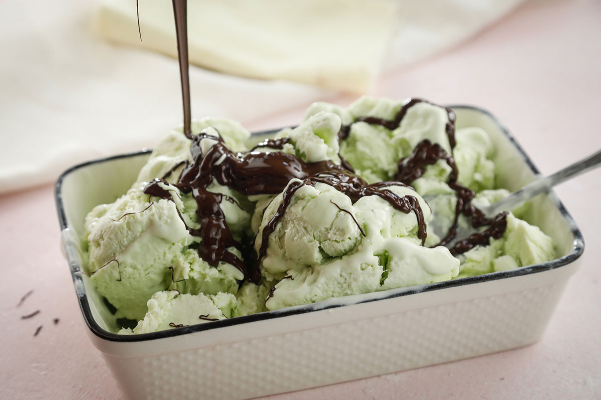

El helado de menta y chocolate es un helado con sabor a menta con pequeñas virutas de chocolate. En algunos casos se utiliza el licor de crema de menta para proporcionar el gusto característico, pero en la mayoría de los casos se utiliza saborizante de menta o hierbabuena. Por lo general, se agrega colorante alimentario para que sea verde, pero puede ser beis o blanco en variedades «naturales».

Debido a su consumo extendido, el helado de menta se elabora de formas diferentes y diferentes marcas lo comercializan. El sabor se suele describir como «fresco», con un sabor dulce «sutil» acompañado con el toque amargo que aportan las virutas de chocolate. El color natural tienda a ser blanquecino, en tanto que el tono verde menta característico se puede conseguir tanto con colorantes artificiales como orgánicos. Los helados del fabricante Jenni's presentan un tono verde a base de hoja de espirulina, vegetales y zumo de frutas. Las recetas suelen incluir los ingredientes típicos del helado (leche, huevos, azúcar), a los que se añade hoja de menta y pepitas de chocolate negro. Mientras se hierve la leche se agregan las hojas, y también es común incluir vainas de vainilla.
 

Los holandeses inventaron el helado de menta, y posteriormente Baskin Robbins cita el «Mint Chocolate Chip» (menta con chispas de chocolate) como uno de los treinta y un sabores originales cuando comenzaron a operar en 1945. Los restaurantes Howard Johnson's sirvieron este postre a principios de la década de 1950, que se acabaría por convertir en un sabor común en las décadas de 1960 y 1970. Anteriormente, Howard Johnson's fue responsable de inventar el helado con chispas de chocolate bajo la dirección de George R. Pitman
